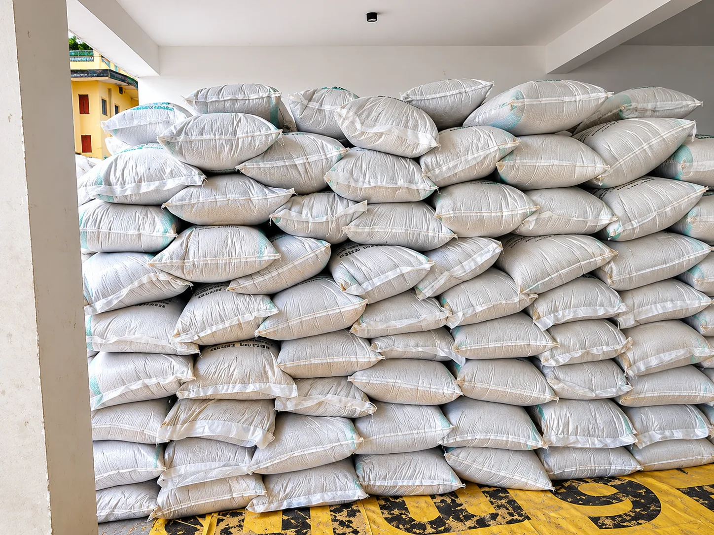

Dried hibiscus flowers
A priority sourcing product for tea, beverage and botanical ingredient buyers.
Hibiscus specifications →Staurus Foods is building an African agricultural sourcing network, beginning with Nigerian dry commodities for international manufacturers, processors and ingredient buyers. Start with samples. Scale with confidence.
Dry, storable agricultural commodities · Contract-led procurement · Small trial orders considered
Dried hibiscus is one of our initial priorities. From samples to repeat orders, we focus on shelf-stable crops and buyer-defined quality specifications. Availability and final grades are confirmed for each transaction.
A priority sourcing product for tea, beverage and botanical ingredient buyers.
Hibiscus specifications →



Our sourcing model combines local partnerships, verified specifications and international buyer relationships. Our existing Nigerian sourcing network provides an operational foundation, with additional African origins developed as partnerships are verified. We do not list speculative stock or publish unverified certifications.
Our proposed trading approach begins with buyer requirements, representative samples and an agreed contract, then procurement, independent checks and shipment documentation.
How we approach quality →Commodity, grade, volume, destination and target delivery terms.
Agree a representative sample and laboratory tests where required.
Confirm quotation, lead time, payment terms and inspection requirements.
Source, inspect, document and arrange shipment to the agreed Incoterm.
Import requirements, quality considerations and practical guides for building reliable African commodity supply relationships.
Explore sourcing insights →Share your commodity requirements and we will assess availability and sample arrangements.